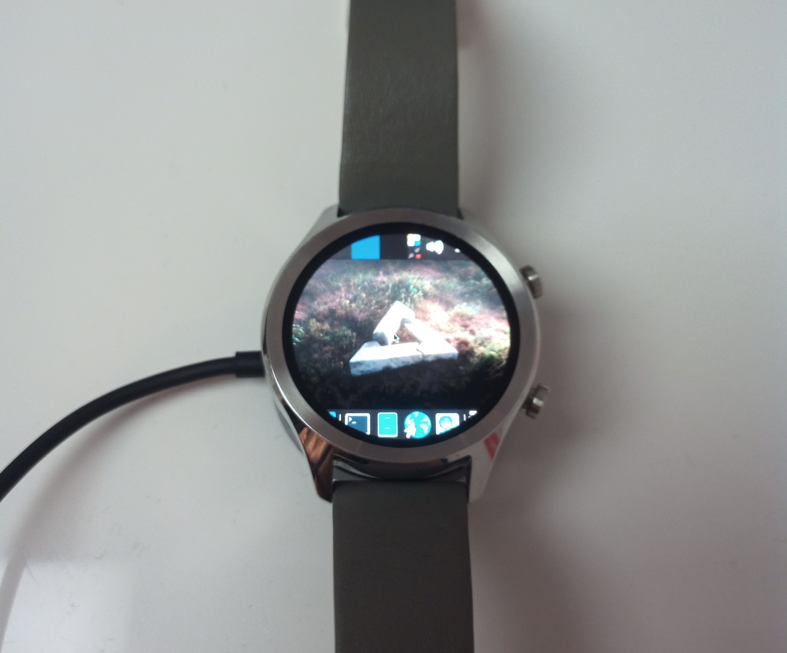

Ticwatch C2+ (mobvoi-skipjack)
|
 Ticwatch C2+ running XFCE4 | |
| Manufacturer | Mobvoi |
|---|---|
| Name | Ticwatch C2+ |
| Codename | mobvoi-skipjack |
| Released | 2018 |
| Category | testing |
| Original software | Android Wear |
| Original version | 9 |
| Hardware | |
| Chipset | Qualcomm Snapdragon 210 (MSM8909) |
| CPU | Quad-core 1.1 GHz Cortex-A7 |
| GPU | Adreno 304 |
| Display | 360x360 AMOLED |
| Storage | 4 GB |
| Memory | 1 GB |
| Architecture | armv7 |
| Type | watch |
{kind=link}
| USB Networking |
Works
|
|---|---|
| Flashing |
Works
|
| Touchscreen |
Works
|
| Display |
Partial
|
| WiFi |
Works
|
| FDE | |
| Mainline | |
| Battery | |
| 3D Acceleration | |
| Audio | |
| Bluetooth | |
| Camera | |
| GPS |
Broken
|
| Mobile data | |
| SMS | |
| Calls | |
| USB OTG | |
| NFC | |
| Accelerometer | |
|---|---|
| Magnetometer | |
| Ambient Light | |
| Proximity | |
| Hall Effect | |
| Barometer | |
| Power Sensor | |
| Camera Flash | |
|---|---|
| Keyboard | |
| Touchpad | |
| USB-A | |
| HDMI/DP | |
| Ir TX | |
| Ir RX | |
| Stylus | |
| Haptics | |
| Ethernet | |
| FOSS bootloader | |
Contents
Contributors
- ptrcnull
Users owning this device
How to enter flash mode
The watch supports flashing with fastboot.
You can enter fastboot with adb reboot bootloader, or by rebooting and tapping the screen with two fingers (see video here).
Installation
WARNING: Doing this will delete ALL your data on the device, so backup all your data before continuing!
Before flashing postmarketOS you have to unlock your bootloader. To do so, you can run this command while in fastboot:
fastboot oem unlock
Follow the general installation guide with vendor mobvoi and codename skipjack, return here when told to (at the "installation and flashing section").
Now run the following, pick a password when prompted.
pmbootstrap install
Reboot back into fastboot (explained above).
pmbootstrap flasher flash_rootfs pmbootstrap flasher flash_kernel
Reboot and you're good to go!
Broken stuff
Screen
For an unknown reason, msm_iommu_secure_fault_handler_v2 fails to get register dump after boot and the screen stays black.
After disabling and re-enabling the display via following commands:
# echo 4 > /sys/class/graphics/fb0/blank # echo 0 > /sys/class/graphics/fb0/blank
both IOMMU and the screen start working.
Modem/GPS
Device reboots after running msm-modem-downstream with following messages in kernel log:
[ 148.027006] pil-q6v5-mss 4080000.qcom,mss: modem: Brought out of reset [ 148.078600] pil-q6v5-mss 4080000.qcom,mss: modem: Power/Clock ready interrupt received [ 148.078715] pil-q6v5-mss 4080000.qcom,mss: Subsystem error monitoring/handling services are up [ 148.079324] M-Notify: General: 7 [ 148.126088] msm8952-asoc-wcd 7702000.sound: default codec configured [ 148.148391] msm8952-asoc-wcd 7702000.sound: ASoC: CODEC DAI cajon_vifeedback not registered [ 148.148744] msm8952-asoc-wcd 7702000.sound: snd_soc_register_card failed (-517) [ 148.486750] Fatal error on the modem. [ 148.486839] modem subsystem failure reason: fs_rmts_pm.c:855:[5, 6] rmts_read_iovec failed. [ 148.486900] subsys-restart: subsystem_restart_dev(): Restart sequence requested for modem, restart_level = SYSTEM. [ 148.489077] M-Notify: General: 8
No workaround found yet.
See also
- pmaports!2804 Initial merge request
- Kernel source